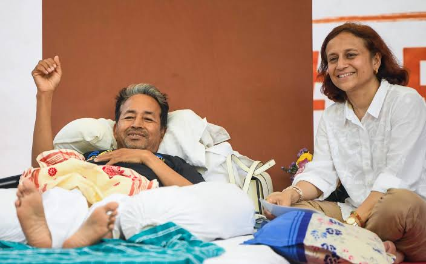

Sonam Wangchuk, the renowned Indian engineer and education reformist, has recently led a significant strike advocating for educational reforms in the country. The strike, which took place in various cities across India, aimed to highlight the need for innovative teaching methods, better infrastructure, and increased government support for education. Wangchuk's movement has garnered widespread attention, with students, educators, and activists joining the cause. The strike has sparked discussions on social media and in educational forums about the current state of education in India and the urgent need for change. The government has acknowledged the concerns raised by Wangchuk and his supporters, promising to review educational policies and consider implementing some of the proposed reforms. As the strike continues to gain momentum, it remains to be seen how these efforts will shape the future of education in India.
Sonam Wangchuk: From the Beginning to the Latest Situation
Sonam Wangchuk, an engineer, education reformer, and climate activist from Ladakh, became widely known for advocating sustainable development and constitutional safeguards for the region. After Ladakh became a Union Territory in 2019, he began campaigning for greater protection of its environment, culture, and local communities. His main demands included granting Ladakh statehood, bringing it under the Sixth Schedule of the Constitution to protect tribal rights, creating a dedicated public service commission, and ensuring better political representation.
In 2023 and 2024, Wangchuk organized peaceful protests, hunger strikes, and a march from Ladakh to Delhi to draw national attention to these demands. Thousands of people joined the movement, but talks between Ladakhi representatives and the Central Government remained inconclusive. In September 2024, Wangchuk and several supporters were detained near the Delhi border while attempting to march peacefully into the capital.
The situation escalated in September 2025 when protests in Ladakh turned violent after weeks of demonstrations. Clashes between protesters and security forces resulted in deaths and injuries, following which Wangchuk was detained under the National Security Act (NSA). He denied allegations that he had incited violence, stating that he had repeatedly appealed for peaceful protests. After spending about 170 days in detention, he was released in March 2026, but the core demands of the Ladakh movement remained unresolved.
In June 2026, Wangchuk began another indefinite hunger strike at Jantar Mantar in New Delhi. Unlike his earlier protests focused on Ladakh, this fast was in support of a nationwide student movement demanding accountability over alleged examination irregularities and reforms in the education system. As his health deteriorated after more than three weeks without food, Delhi Police shifted him to a hospital on medical advice and following a court directive. Wangchuk stated that he intended to continue his protest, while political leaders, social activists, and public figures called on the government to hold discussions with him instead of allowing the situation to worsen.
Here are some quotes from Sonam Wangchuk:
"Don't blame the child for forgetting lessons; make the lessons unforgettable."
"I expect nothing from the government but I expect everything from people."
"Let Ladakh change the world rather than the world change Ladakh."
"I always say, please live a simple life in the city so that we can lead a simple life in the mountains."
To view more about Sonam Wangchuk's strike and updates, click here to read the latest news and updates from BBC News.
BACK TO HOME